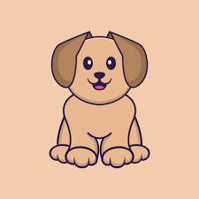

<nz-layout>
  <nz-sider>
    <h3 style="font-size: 32px; font-weight: 600px; font-family: Impact, Haettenschweiler, 'Arial Narrow Bold', sans-serif; margin: 30px 10px">Petstagram</h3>
    <ul nz-menu nzMode="inline">
      <li nz-menu-item nzSelected>
        <i class="fa fa-home icon"></i>
        Trang chủ
      </li>
      <li nz-menu-item >
        <i class="fa fa-search icon"></i>
        Tìm kiếm
      </li>
      <li nz-menu-item >
        <i class="fa fa-compass icon"></i>
        Khám phá
      </li>
      <li nz-menu-item >
        <span class="icon" nz-icon nzType="video-camera-add" nzTheme="outline"></span>
        Reels
      </li>
      <li nz-menu-item >
        <span class="icon" nz-icon nzType="message" nzTheme="fill"></span>
        Tin nhắn
      </li>
      <li nz-menu-item >
        <span class="icon" nz-icon nzType="notification" nzTheme="fill"></span>
        Thông báo
      </li>
      <li nz-menu-item >
        <span class="icon" nz-icon nzType="plus-square" nzTheme="outline"></span>
        Tạo
      </li>
      <li nz-menu-item >
        
        Trang cá nhân
      </li>
    </ul>
  </nz-sider>
  <nz-layout>
    <nz-header>Header</nz-header>
    <nz-content>
      Content
      <app-root></app-root>
    </nz-content>
  </nz-layout>
</nz-layout>